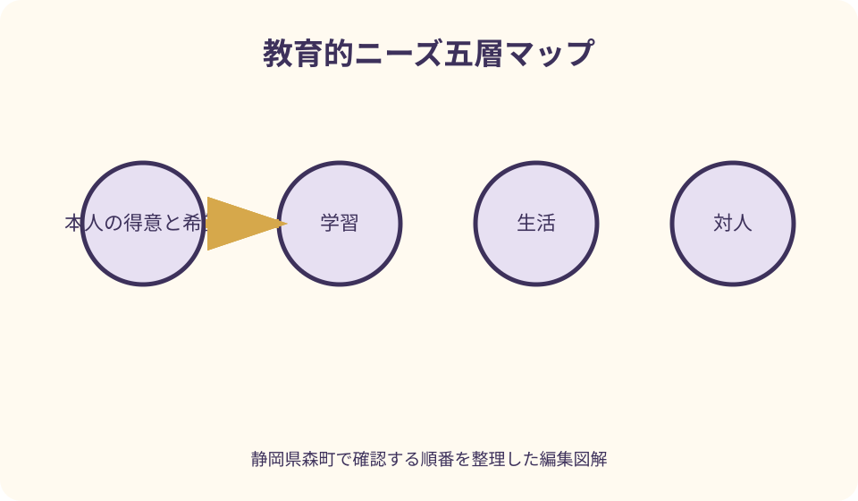
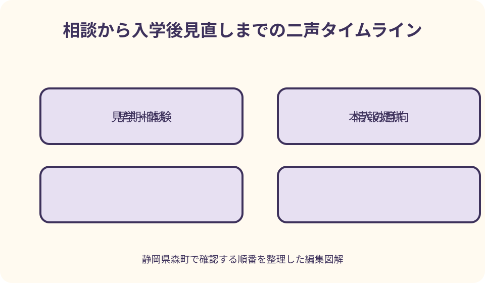

学校・就学・家庭記録｜最終確認 2026-08-10
静岡県森町の特別支援教育・就学相談｜本人の意向と必要な支援の整理
特別支援教育の相談は、診断の有無だけで学ぶ場所を決める手続ではありません。子どもの得意なこと、困りやすい場面、必要な支援、本人と保護者の意向、地域で用意できる教育条件を重ねて検討する過程です。通常の学級、通級による指導、特別支援学級、特別支援学校を優劣の順に並べず、森町の相談窓口と静岡県・文部科学省の一次情報を使って、確認事項を一枚にします。

編集イラスト結論：学校名より先に教育的ニーズを言葉にする
相談の最初に「どの学級がよいか」を一つ選ぶ必要はありません。子どもが参加しやすい場面、負担が強い場面、理解しやすい説明、必要な環境を整理し、その支援をどこでどう実現できるかを尋ねます。
本人の意向と保護者の意向は、同じ欄へまとめません。本人が言葉で答えにくい場合も、表情、行動、選び方、安心する条件を丁寧に観察し、本人の意思を推測だけで確定しないようにします。
通常の学級、通級による指導、特別支援学級、特別支援学校は、子どもの価値や将来を順位付けする名称ではありません。教育内容、在籍、支援体制、通学などの条件を個別に確認します。
この記事は就学先、在籍変更、支援内容を判定しません。森町教育委員会と学校から説明を受け、必要に応じて医療・福祉などの意見も照合するための相談記録として使います。
就学前は森町学校教育課への相談時期を確認する
森町公式の入学案内では、就学時健康診断を小学校入学予定者に十月・十一月に実施するとされています。ただし、教育相談を健診日まで待たなければならないという意味ではありません。
就学前に学び方や支援へ心配があるときは、在園先と情報を整理し、森町学校教育課へ相談の入口、日程、必要資料を尋ねます。いつまでに結論を出すかだけでなく、見学や体験に必要な期間も確認します。
初回連絡では、子どもの年齢、在園先、就学予定年度、相談したい場面を簡潔に伝えます。診断名がないことを理由に家庭側で相談を見送らず、どの情報があれば話し合えるかを聞きます。
森町の学校一覧は学校名と所在地を知る入口です。住所から就学先や利用できる支援を家庭が断定せず、指定校と相談先を教育委員会へ確認します。
在学中は困りごとが起きる場面から相談する
在学中の相談は、成績や診断だけで始める必要はありません。朝の支度、文字を読む、話を聞く、集団へ参加する、休み時間、給食、登下校など、困りごとが表れる場面を担任へ伝えます。
担任に加え、学校内の特別支援教育コーディネーターなどへ相談できるかを尋ねます。家庭が担当者名を推測して直接連絡するのではなく、学校が示す窓口と予約方法を確認します。
相談前の二週間ほど、起きた日時、直前の活動、本人の反応、周囲の対応、その後どう落ち着いたかを記録します。毎回起きるのか、特定の条件だけかを分ける助けになります。
学校での困りごとと家庭での様子が違っても、どちらかが誤りとは限りません。環境、人数、課題、時間帯の違いとして並べ、支援を試す条件を相談します。
診断書がなくても観察記録は作れる
医療的な診断は医師が行うもので、保護者や学校が記事を読んで決めるものではありません。一方、本人が困る具体的場面、得意な方法、疲れやすさは、診断の有無にかかわらず記録できます。
記録は「集中力がない」のような評価語だけにせず、「十五分ほどで席を離れ、口頭指示を忘れた」「図で示すと最後まで進めた」と観察可能な内容へ変えます。
医療機関を受診している場合は、学校生活で確認したい質問を持参します。診断書や意見書の提出が必要か、どの様式かを先に教育委員会または学校へ尋ねます。
検査結果の数値を学級選択へ直接結び付けません。数値が示す意味、日常生活との関係、必要な支援は専門家の説明を受け、学校側の観察と合わせます。
本人の得意・困難・希望を三列にする
一列目には、好きな活動、得意な伝え方、集中しやすい環境、安心できる人を書きます。困難だけの資料にせず、学習参加を支える手掛かりを残します。
二列目には、大きな音、急な予定変更、複数の口頭指示、書字、移動など、負担が出る条件を書きます。本人の性格として固定せず、いつ、どの程度、何があると変わるかを添えます。
三列目には、本人が試したいこと、避けたいこと、見学で確かめたいことを書きます。保護者の希望と異なる場合は消さず、両方を相談記録へ載せます。
言葉で選ぶことが難しい子どもには、写真、絵、二つの選択肢、実際の体験など方法を変えます。どの方法で意思を確認したかも記録します。
通常の学級を支援がない場所と考えない
通常の学級で学ぶ場合にも、座席、教材提示、指示の分け方、予定の見通しなど、個別に相談できる支援があります。利用できる内容や体制は学校へ確認します。
クラス人数や一斉学習の時間だけで適否を家庭が判断せず、本人が参加しやすい授業、休憩の取り方、校内で相談できる場所を見学時に尋ねます。
通常の学級を選べば将来の選択肢が広がる、あるいは困難が小さい、と一括して考えません。現在の教育的ニーズと必要な支援が満たせるかを具体的に話します。
在籍後に状況が変わった場合の校内相談、個別の教育支援計画などの作成や見直しについても確認します。入学時の選択を固定して見直せないものにしません。

通級による指導は在籍と指導時間を確認する
通級による指導は、通常の学級に在籍しながら、障害による学習上・生活上の困難を改善・克服するための特別な指導を受ける仕組みです。対象や利用手続は教育委員会へ確認します。
通級を受ける学校、曜日、時間、移動方法、通常授業との調整は地域と本人の状況で異なります。「週一回」など知人の例を自分の子へ当てはめません。
相談では、通級で何を学ぶか、その内容が在籍学級や家庭へどう共有されるか、本人が移動をどう感じるかを尋ねます。名称だけで効果を期待しません。
文部科学省の通級ガイドも、困難の要因を本人、保護者、学校、専門家から得た情報で整理する考え方を示しています。利用の可否や内容は正式な相談過程で確認します。
特別支援学級は教育内容と交流の実際を見る
特別支援学級を検討する場合は、対象となる学級、教育課程、一日の過ごし方、集団の大きさ、支援体制を確認します。少人数という一点だけで本人に合うと決めません。
交流及び共同学習がある場合は、どの教科や活動で通常の学級と学ぶのか、本人の状態に応じてどう調整するのかを尋ねます。回数だけでは実際の参加の仕方が分かりません。
学年進行で教育内容や学級編制が変わる可能性もあります。現在の見学内容を将来まで不変とみなさず、いつ計画を見直すかを聞きます。
特別支援学級を選ぶことを、能力の上限や将来の進路の決定として語りません。目の前の学習と生活に必要な支援、本人の希望を基に説明を受けます。
特別支援学校は見学・教育相談・体験を使って理解する
静岡県は、県内の特別支援学校で学校見学、教育相談、体験入学などを行い、本人、保護者、教師、保育士等が教育への理解を深める機会を案内しています。日程と対象は各校へ確認します。
見学では、授業だけでなく、通学、給食、医療的ケア、休憩、行事、家庭との連絡を質問します。建物や設備が整っているという印象だけで就学を決めません。
体験後は、本人が安心したこと、疲れたこと、もっと知りたいことを記録します。保護者の感想と学校の説明を別々に残し、教育委員会との相談へ戻します。
特別支援学校への就学が予想される場合も、県の説明では市町教育委員会との相談や専門的な協議、保護者との話し合いを経ます。家庭が学校へ直接申し込めば確定するとは考えません。
四つの学びの場を一直線に並べない
通常の学級、通級、特別支援学級、特別支援学校を、支援が軽い順・重い順の一列として選ぶと、本人が必要とする教育内容や環境が見えにくくなります。
比較表の縦軸は、在籍、学習集団、特別な指導、交流、通学、休憩、支援者、家庭との連絡にします。公的説明と見学で確認した事実だけを記入します。
一人の子どもでも、学習内容、感覚面、対人関係、体調によって必要な支援は異なります。一つの特徴だけで学びの場を決める理由にしません。
選択肢の名称より、本人が学べること、参加できること、支援が必要なことを具体化します。そのうえで地域の体制を教育委員会から説明してもらいます。
本人・保護者への情報提供と意向の尊重を確認する
文部科学省は、本人・保護者へ十分に情報提供し、意見を最大限尊重しながら、教育委員会や学校等と教育的ニーズ・必要な支援について合意形成することを原則として示しています。
同時に、最終的な就学先は市町村教育委員会が、障害の状態、必要な支援、地域の教育体制などを総合して決定すると説明しています。希望を伝えることと決定権を混同しません。
説明を受けたら、選択肢ごとの教育内容、必要な支援がどう確保されるか、決定までの手順と時期を質問します。理解できない用語は持ち帰らず、その場で言い換えを頼みます。
本人と保護者の意向が異なる場合も、どちらかを無視して一つの希望にまとめません。本人の発達段階に合う意思確認方法を相談し、経過を記録します。
見学では本人の一日をたどる
見学前に、登校、朝の会、授業、休み時間、給食、移動、下校という一日の線を作ります。各場面で本人がどこにいて、誰へ助けを求めるかを質問します。
写真撮影や資料の持ち帰りは学校の指示に従います。他の子どもの個人情報や授業の妨げに配慮し、記録できない内容は見学後すぐ言葉で残します。
本人が参加する場合は、長時間の見学を当然とせず、休める場所、途中退出、説明方法を事前に相談します。見学で疲れたことだけを不適合の証拠にしません。
見学後は「雰囲気がよかった」で閉じず、分かった事実、本人の反応、未確認、次に試したいことを四欄にします。複数候補を同じ尺度で比べます。
相談記録は事実・意向・提案・決定を分ける
一列目に家庭と園・学校で観察した事実、二列目に本人の意向、三列目に保護者の意向、四列目に教育委員会や学校の提案、五列目に決定事項を置きます。
提案された内容を決定欄へ先に書くと、検討中の選択肢が確定事項として家族へ伝わります。回答期限と再相談日を付け、未決定の状態を見える形で保ちます。
医療、福祉、保育から情報がある場合は、書類名、作成者、日付、共有への同意を記します。古い検査結果を現在の状態として扱わないよう更新を確認します。
面談の最後に、家庭が理解した内容を読み上げ、次に誰が何をするかを確認します。後日訂正があれば、旧記録を消さず訂正日と理由を追加します。
個人情報は目的と共有範囲を確かめる
相談資料には発達、診療、家庭状況など慎重に扱う情報が含まれます。何の判断や支援に必要か、誰が閲覧するか、どこへ保管するか、返却・廃棄はどうするかを確認します。
複数機関が連携する場合も、すべての記録が自動的に共有されるとは限りません。同意書の範囲、共有する資料、更新時の連絡を一つずつ確認します。
本人には、誰が何を知るのかを分かる方法で説明します。本人が知られたくないと感じることも記録し、必要な支援との両立を相談します。
家族間で共有するときは、診断書や検査画像を無制限に転送せず、相談の結論、未決定、次回日をまとめた版を作ります。原本の所在だけを示します。

在学後は支援を試し記録して見直す
入学・進級後は、合意した支援がどの場面で実施され、本人の参加がどう変わったかを記録します。「効果あり・なし」の二択ではなく条件の違いを見ます。
本人へも、助かったこと、負担だったこと、変えたいことを聞きます。大人が落ち着いて見えることと、本人が学びやすいことが同じとは限りません。
個別の教育支援計画や指導計画が作られる場合は、保護者が内容を確認し、家庭や関係機関との連携方法を尋ねます。作成の有無と扱いは学校へ確認します。
支援の変更を希望するときは、以前の選択が誤りだったと責めるのではなく、現在の事実、試した方法、残る課題を示して再相談します。
相談を早く始める良い点
良い点は、本人と保護者が複数の説明を聞き、見学や体験をしたうえで考える時間を持てることです。締切直前に学校名だけを選ぶ負担を減らせます。
園、家庭、医療などで異なる様子を並べられ、環境による違いを手掛かりにできます。一つの場面の印象だけで本人像を固定することを避けられます。
本人の得意や希望を早い段階から記録へ入れられます。困難の説明だけが先行せず、どのような学びなら参加しやすいかを話せます。
入学前にすべて決まらなくても、相談担当、次回日、暫定の支援、見直し時期を置けます。未確定を隠さず管理できることが実務上の利点です。
就学相談の案内へ注文したい点
注文したい点は、森町公式の入学案内や学校一覧から、特別な教育的支援に関する相談の全工程や年間時期を一目で把握しにくいことです。まず学校教育課へ個別に尋ねる必要があります。
通常の学級、通級、特別支援学級、特別支援学校という用語は、初めての家庭には在籍や指導の違いが分かりにくいものです。地域での実際を図と一日の例で説明してほしいところです。
相談が判定を受ける場だと感じ、診断前の家庭がためらうこともあります。困りごとの整理、見学、情報提供から始められる入口が明示されると相談しやすくなります。
一方、ウェブ記事が個別の就学先や利用可否を断定するのも適切ではありません。公式窓口、確認日、見学、本人の意向をつなぐ役割にとどめます。
代案・結論：決め切れないときは未確認を細分化する
複数の選択肢で迷うときは、「全部分からない」とせず、教育内容、集団、通学、休憩、支援者、本人の反応に分けます。分からない欄だけを次の見学や相談の質問にします。
本人が見学を嫌がる場合は、理由を聞き、写真や短時間の訪問、保護者のみの相談など代わる方法があるか尋ねます。見学しないことを直ちに本人の最終意思とはみなしません。
保護者と教育委員会の理解が合わない場合は、決定理由、検討した支援、本人の意向の扱い、再相談の方法を記録します。感情を否定せず、争点を具体化します。
結論として、選択肢を早く一つに絞るより、本人の教育的ニーズと必要な支援について共有できる言葉を増やすことが、継続的な相談の土台になります。
大石の視点：住まいと就学先を同時に断定しない
住まい探しで支援の場が重要でも、不動産会社が就学先や通級利用を保証することはできません。私は、物件契約前に住所候補を学校教育課へ伝え、確認可能な範囲を尋ねることを勧めます。
学校までの距離だけでなく、通級先への移動、保護者の送迎、放課後、医療・福祉との連絡時間も暮らしへ影響します。利用が確定していない段階では複数案で計算します。
特別支援学校や学級の有無を物件広告から読み取り、本人に合うと決めることはできません。見学、教育相談、本人の反応、教育委員会の説明を記録して判断材料にします。
家族の比較表には学校の評判ではなく、相談日、支援内容、移動手段、未確認、次回日を置きます。住まいと教育を別々の専門窓口へ確認し、最後に生活時間として重ねます。
記事固有の教育的ニーズ五層マップ
中心に本人の得意と希望を置き、その外側へ学習、生活、対人、感覚・体調、移動の五層を描きます。各層に困る条件と役立った支援を書きます。
学びの場の名称はさらに外側へ置き、各選択肢が五層へどう対応するかを学校・教育委員会の説明から線で結びます。最初から一つの名称を中心にしません。
線は、確認済み、体験前、再相談の三種類にします。保護者の期待と公的な回答を同じ線で描かず、凡例を付けます。
裏面には、相談、見学、本人への説明、意向確認、決定、入学後見直しを時間順に置きます。選択と見直しを一つの循環として見渡せます。
初回相談で使える伝え方
就学前は「来年度入学予定で、集団の指示と音の多い場面に困りがあります。学びの場を決めつけず、相談の時期、必要資料、見学までの流れを知りたいです」と伝えます。
在学中は「算数の一斉説明では課題開始まで時間がかかり、図で手順を示すと進められました。校内で相談できる担当と、試せる支援を教えてください」と事実を示します。
選択肢の説明時は「通常の学級、通級、特別支援学級について、在籍、指導内容、時間、移動、見直し方法の違いを教えてください」と比較軸を揃えます。
面談の最後は「本人の希望、保護者の希望、提案、決まったこと、未決定を読み合わせたいです」と頼み、次回日と家庭の担当を確認します。
まとめ：本人の声と支援の具体性を記録する
静岡県森町で特別支援教育を相談するときは、就学前なら園と学校教育課、在学中なら担任と校内相談窓口を入口にし、困りごとを場面と条件で伝えます。
通常の学級、通級、特別支援学級、特別支援学校を優劣で並べず、教育内容、支援、在籍、通学、本人の反応を同じ表で確認します。
本人・保護者への情報提供と意向の尊重を前提にしつつ、就学先は教育委員会が総合的に決定する仕組みも理解します。希望、提案、決定を別欄に残します。
今日の一歩は、本人の得意、困る場面、役立った支援、本人が望むことを各一つ書くことです。その四項目を持って森町の相談窓口へ連絡してください。
公式情報・確認先
掲載内容は次の一次情報を基礎に整理しました。営業、料金、催し、交通は変わるため、出発前または手続き前にリンク先で最新情報を確認してください。
- 入学（静岡県森町、2026-08-10確認）
- 学校教育課（静岡県森町、2026-08-10確認）
- 森町の小・中学校一覧（静岡県森町、2026-08-10確認）
- 静岡県就学支援委員会（静岡県教育委員会、2026-08-10確認）
- 学校見学、入学する学校が決まるまでの手順（静岡県教育委員会、2026-08-10確認）
- 特別支援教育に関すること（静岡県教育委員会、2026-08-10確認）
- 障害のある子供の就学先決定について（文部科学省、2026-08-10確認）
- 早期からの教育相談・支援体制構築事業（文部科学省、2026-08-10確認）
- 初めて通級による指導を担当する教師のためのガイド（文部科学省、2026-08-10確認）